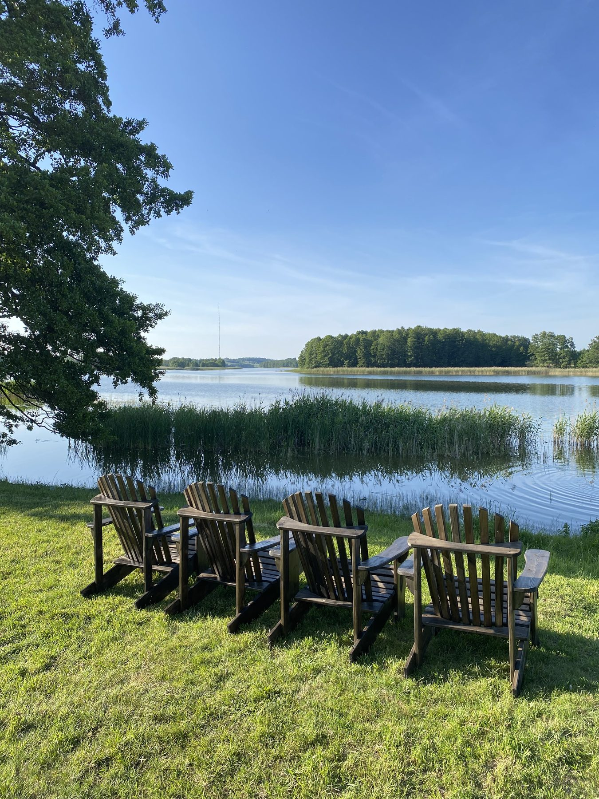
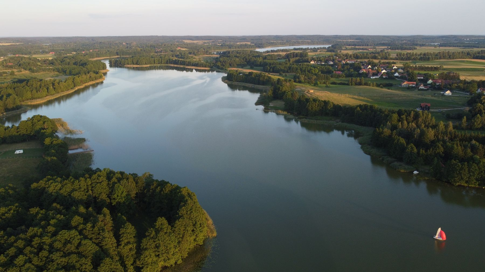
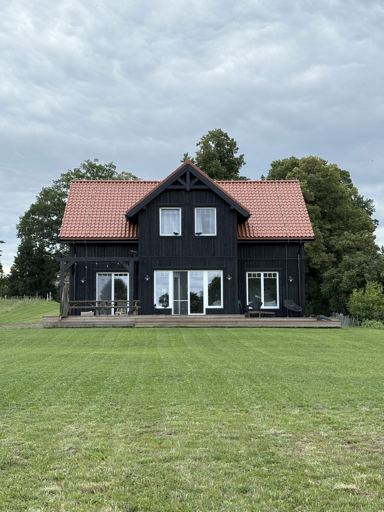
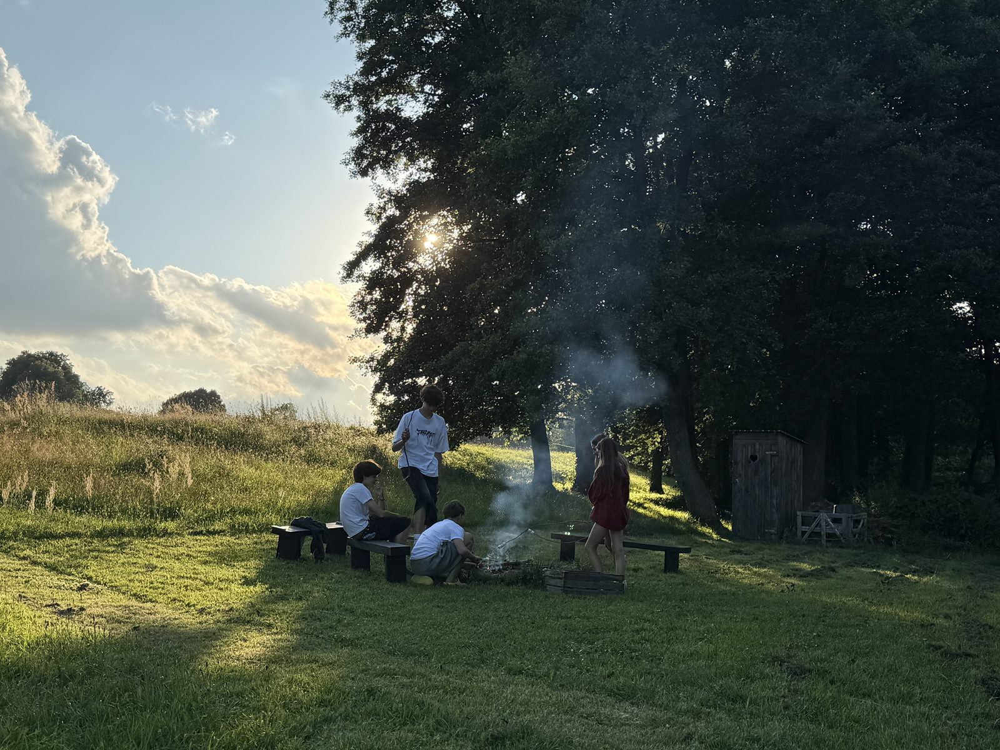

Marcinowa Wola · Mazury
Przytulny i komfortowy dom nad jeziorem, w cichej mazurskiej wsi, z dala od tłumów, ale w wygodnej odległości od lokalnych atrakcji.

O domu
Dom łączy skandynawską prostotę z mazurską tradycją. 155 m², dwie kondygnacje, ogromny taras z wygodną sofą oraz miejscem na posiłki, własny, łagodny dostęp do jeziora Buwełno — na wyłączność tylko dla Was.



Układ domu
4 sypialnie i wspólna przestrzeń do spędzania czasu razem. Wybierz pomieszczenie, żeby zobaczyć pełny opis i galerię zdjęć.
Parter
Piętro
Na zewnątrz
Okolica
Cicha wieś między Orzyszem a Giżyckiem, z dala od tłumów, ale w wygodnej odległości od lokalnych atrakcji, aktywności i restauracji.
Oczami Gości
Podsumowanie AI
Goście doceniają Dom nad Buwełnem za wyjątkowy spokój, wygodę i piękne otoczenie. W opiniach często wyróżniają dużą, świetnie wyposażoną kuchnię oraz przestronną część wspólną, idealną do spędzania czasu razem. Ogromnym atutem jest prywatny dostęp do jeziora, trawiasta plaża z łagodnym i bezpiecznym dla dzieci zejściem do wody, a także dostępny sprzęt rekreacyjny – kajaki oraz SUP-y. Bardzo podoba im się również czysty, przemyślany i przytulny wystrój wnętrz, duży taras i miejsce na ognisko, a całość dopełnia serdeczna i pomocna atmosfera tworzona przez gospodarzy.
Kontakt
Rezerwacje telefonicznie lub mailowo.
Adres domu: Marcinowa Wola 9C, 11-513 Marcinowa Wola